Chapter 7 Matched-Pairs Experiment
The matched-pairs experiment (MPE) is the most extreme version of the SRE with only one treated unit and one control unit within each stratum. In this case, the strata are also called pairs. Although this type of experiment is a special case of the SRE discussed in Chapter 5, it has its own estimation and inference strategy. Moreover, it has many new features and it is closely related to the “matching” strategy in observational studies which will be covered in Chapter 15 later. So we discuss the MPE here, in its own chapter.
35 Design of the experiment and potential outcomes
Consider an experiment with  units. If we have predictive covariates to the outcomes, we can pair units based on the similarity of covariates. With a scalar covariate, we can order units based on this covariate and then form pairs based on the adjacent units. With many covariates, we can define pairwise distances between units and then form pairs based on these distances. In this case, pair matching can be done using a greedy algorithm or an optimal nonbipartite matching algorithm. The greedy algorithm pairs the two units with the smallest distance, drops them from the pool of units, pairs the two remaining units with the smallest distance, etc. The optimal nonbipartite matching algorithm divides the units into
units. If we have predictive covariates to the outcomes, we can pair units based on the similarity of covariates. With a scalar covariate, we can order units based on this covariate and then form pairs based on the adjacent units. With many covariates, we can define pairwise distances between units and then form pairs based on these distances. In this case, pair matching can be done using a greedy algorithm or an optimal nonbipartite matching algorithm. The greedy algorithm pairs the two units with the smallest distance, drops them from the pool of units, pairs the two remaining units with the smallest distance, etc. The optimal nonbipartite matching algorithm divides the units into  pairs of two units to minimize the sum of the within-pair distances. See Greevy et al., (2004) for more details of the computational aspect of the MPE. In this chapter, we assume that the pairs are formed based on the covariates, and discuss the subsequent design and analysis issues.
pairs of two units to minimize the sum of the within-pair distances. See Greevy et al., (2004) for more details of the computational aspect of the MPE. In this chapter, we assume that the pairs are formed based on the covariates, and discuss the subsequent design and analysis issues.
Let  index the unit
index the unit  in pair
in pair  , where
, where  and
and
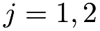
. Unit has potential outcomes 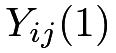
and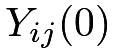
under the treatment and control, respectively. Within each pair, we randomly assign one unit to receive the treatment and the other to receive the control. Let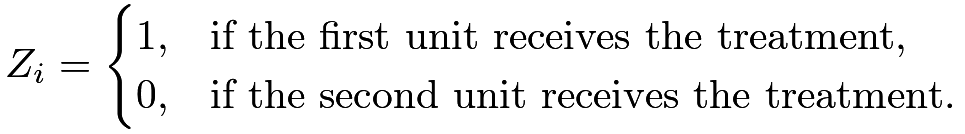 |
We can formally define MPE based on the treatment assignment mechanism.
Definition 7.1 (MPE)
We have
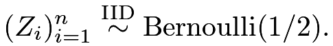 |
(40) |
The observed outcomes within pair are
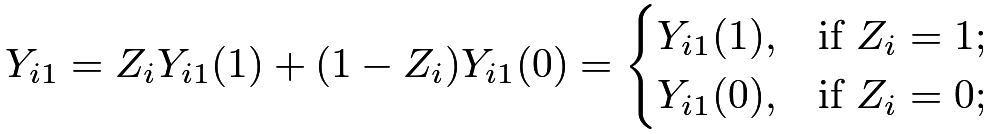 |
and
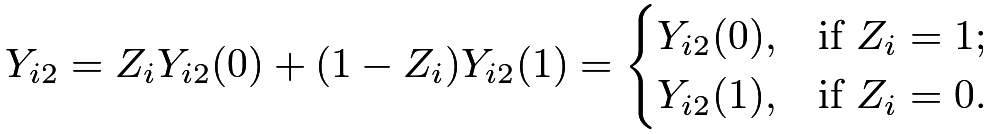 |
So the observed data are
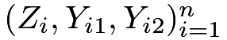
.36 FRT
Similar to the discussion before, we can always use the FRT to test the sharp null hypothesis:
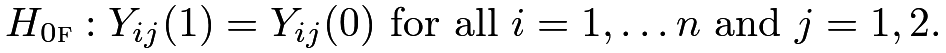 |
When conducting the FRT, we need to simulate the distribution of
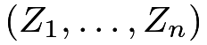
from (40). I will discuss some canonical choices of test statistics based on the within-pair differences between the treated and control outcomes: |
 |
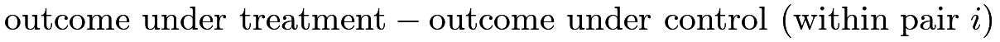 |
||
|
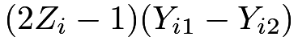 |
|||
|
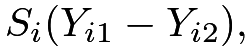 |
where the
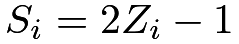
are IID random signs with mean and variance
and variance  , for .
Since the pairs with zero
, for .
Since the pairs with zero  ’s do not contribute to the randomization distribution, we drop those pairs in the discussion of the FRT.
’s do not contribute to the randomization distribution, we drop those pairs in the discussion of the FRT.
Example 7.1 (paired  statistic)
statistic)
The average of the within-pair differences is
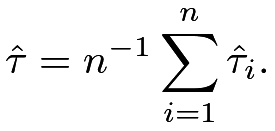 |
Under  ,
,
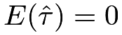 |
and
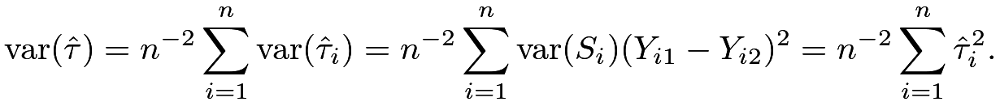 |
Based on the CLT for the sum of independent random variables, we have the Normal approximation:
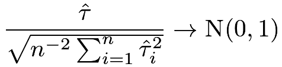 |
in distribution. We can use this Normal approximation to construct an asymptotic test. Many standard textbooks suggest using the following paired statistic in the MPE:
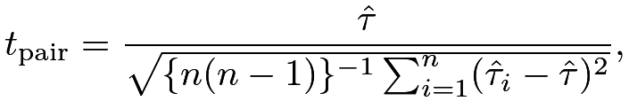 |
which is almost identical to  with large and small under .
with large and small under .
In classic statistics, the motivation for using
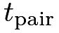
is under a different framework. When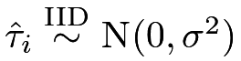
, we can show that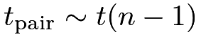
, i.e., the exact distribution of is with degrees of freedom  , which is close to
, which is close to  with a large . The R function t.test with paired=TRUE can implement this test. With a large , these procedures give similar results. The discussion in Example 7.1 gives another justification of the classic paired test without assuming the Normality of the data.
with a large . The R function t.test with paired=TRUE can implement this test. With a large , these procedures give similar results. The discussion in Example 7.1 gives another justification of the classic paired test without assuming the Normality of the data.
Example 7.2 (Wilcoxon sign-rank statistic)
Based on the ranks 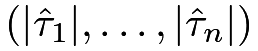 of
of
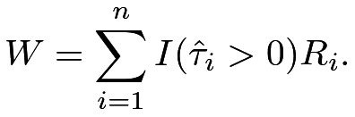 |
Under , the  ’s are fixed so the
’s are fixed so the  ’s are also fixed, which implies that
’s are also fixed, which implies that
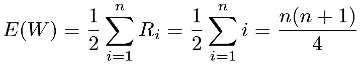 |
and
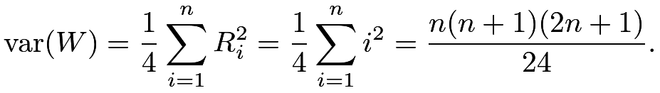 |
The CLT for the sum of independent random variables ensures the following Normal approximation:
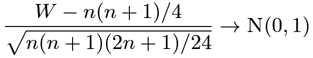 |
in distribution. We can use this Normal approximation to construct an asymptotic test. The R function wilcox.test with paired=TRUE can implement both the exact and asymptotic tests.
Example 7.3 (Kolmogorov–Smirnov-type statistic)
Under 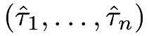 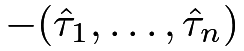, the absolute values are fixed but their signs are random. So
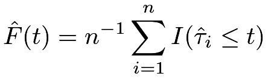 |
be the empirical distribution of , and
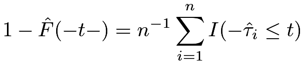 |
be the empirical distribution of , where 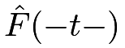 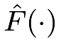 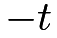
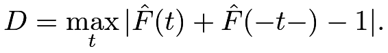 |
Butler, (1969) proposed this test statistic and derived its exact and asymptotic distributions. Unfortunately, this is not implemented in standard software packages. Nevertheless, we can simulate its exact distribution and compute the  -value based on the FRT. 22
-value based on the FRT. 22
Example 7.4 (sign statistic)
The sign statistic uses only the signs of the within-pair differences
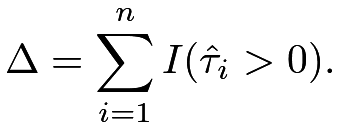 |
Under ,
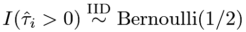 |
and therefore
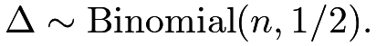 |
Based on this we have an exact Binomial test, which is implemented in the R function binom.test with p=1/2. Using the CLT, we can also conduct a test based on the following Normal approximation of the Binomial distribution:
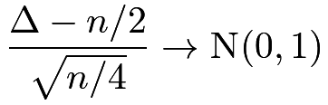 |
in distribution.
Example 7.5 (McNemar’s statistic for a binary outcome)
If the outcome is binary, we can summarize the observed data from the MPE in a more compact way. Given a pair, the treated outcome can be either or and the control outcome can be either or , yielding a two-by-two table as in Table 3.
| control outcome 1 | control outcome 0 | |
|---|---|---|
| treated outcome 1 | 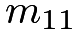 |
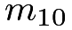 |
| treated outcome 0 | 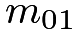 |
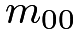 |
Under 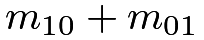, the numbers of concordant pairs and are fixed, and
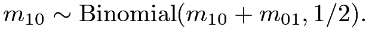 |
This implies an exact test based on the Binomial distribution. The R function mcnemar.test gives an asymptotic test based on the Normal approximation of the Binomial distribution:
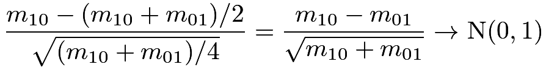 |
in distribution. Both the exact FRT and the asymptotic test do not depend on or . Only the numbers of discordant pairs matter in these tests.
37 Neymanian inference
The average causal effect within pair is
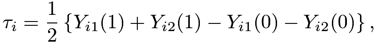 |
and the average causal effect for all units is
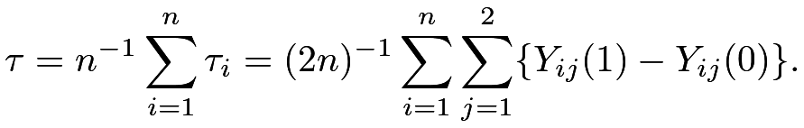 |
It is intuitive that is unbiased for
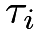
, so is unbiased for  . We can also calculate the variance of . I relegate the exact formula to Problem 7.1 because the MPE is just a special case of the SRE.
. We can also calculate the variance of . I relegate the exact formula to Problem 7.1 because the MPE is just a special case of the SRE.
However, we cannot follow the strategy under the SRE to estimate the variance of under the MPE. The within-pair sample variances of the outcomes are not well defined because, within each pair, we have only one treated and one control unit. The data do not allow us to estimate the variance of within pair .
Is it possible to estimate the variance of in the MPE? Let us forget about the MPE and change the perspective to the classic IID sampling. If the ’s are IID with mean  and
and  , then the variance of
, then the variance of
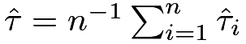
is . An unbiased estimator for is the sample variance , so an unbiased estimator for
. An unbiased estimator for is the sample variance , so an unbiased estimator for  is
is
| (41) |
The discussion also extends to the independent but not IID setting; see Problem AD.1 in Chapter 30.
The above discussion seems a digression from the MPE which has completely different statistical assumptions. But at least it motivates a variance estimator  , which uses the between-pair variance of to estimate the variance of . Of course, it is derived under different assumptions. Does it also work for the MPE? Theorem 7.1 below is a positive result.
, which uses the between-pair variance of to estimate the variance of . Of course, it is derived under different assumptions. Does it also work for the MPE? Theorem 7.1 below is a positive result.
Theorem 7.1
Under the MPE, defined in (41) is a conservative estimator for the true variance of :
If the ’s are constant across pairs, then
Theorem 7.1 states that under the MPE, is a conservative variance estimator in general and becomes unbiased if the average causal effects are constant across pairs. It is somewhat surprising because depends on the between-pair variance of the ’s whereas depends on the within-pair variance of each of . The proof below might provide some insights into this surprising result.
Proof of Theorem 7.1:
Recall the basic algebraic fact that which parallels the fact that for a random variable  . Use it in the following steps 2 and 5, we have
. Use it in the following steps 2 and 5, we have
|
||||
|
||||
|
||||
|
||||
|
Therefore,

Similar to the discussions for other experiments, the Neymanian approach relies on the large-sample approximation:
 |
in distribution if  and some regularity conditions hold. Due to the over-estimation of the variance, the Wald-type confidence interval
and some regularity conditions hold. Due to the over-estimation of the variance, the Wald-type confidence interval
covers with probability at least  .
.
Both the point estimator and the variance estimator can be conveniently obtained by OLS, as shown in the proposition below.
Proposition 7.1
and
are identical to the coefficient and variance estimator of the intercept from the OLS fit of the vector on the intercept only.
38 Covariate adjustment
Although we have matched on covariates in the design stage, it is possible that the matching is not perfect and sometimes we have additional covariates beyond those used in the pair-matching stage. In those cases, we can adjust for the covariates to further improve estimation efficiency. Assume that each unit has covariates . Similar to the discussion in the CRE, there are two general strategies of covariate adjustment in the MPE.
38.1 FRT
I start with the covariate-adjusted FRT in the MPE. In parallel with Definition 6.2, we can construct test statistics based on the residuals from a model fitting of the outcome on the covariates, since those residuals are fixed numbers under the sharp null hypothesis. A canonical choice is to fit OLS of all observed ’s on ’s to obtain the residuals ’s. We can then construct test statistics pretending that the ’s are the observed outcomes. Rosenbaum, 2002a () advocated this strategy in particular to the MPE.
In parallel with Definition 6.3, we can directly use some coefficients from model fitting as the test statistics. The discussion in the next subsection will suggest a choice of the test statistic for this strategy.
38.2 Regression adjustment
I now focus on estimating . We can compute the within-pair differences in covariates  and their average
and their average  in the same way as the outcome. We can show that
in the same way as the outcome. We can show that
and
In a realized MPE, is not zero unless all the ’s are zero. With an unlucky draw of , it is possible that differs substantially from zero. Similar to the discussion under the CRE in Chapter 30.2.3, adjusting for the imbalance of the covariate means is likely to improve estimation efficiency.
Similar to the discussion in Section 30.2.3, we can consider a class of estimators indexed by  :
:
which has mean for any fixed . We want to choose to minimize the variance of . Its variance is a quadratic function of :
|
||||
|
which is minimized at
We have obtained the formula for in the above, which can also be written as
where denotes the component-wise absolute value of a vector. So is fixed and known from the observed data. However, depends on unknown potential outcomes. Fortunately, we can obtain an unbiased estimator for it, as shown in Theorem 7.2 below.
Theorem 7.2
An unbiased estimator for is
Therefore, we can estimate the optimal coefficient by
 |
|
|||
 |
which is approximately the coefficient of the in the OLS fit of the ’s on the ’s with an intercept. The final estimator is
which, by the property of OLS, is approximately the intercept in the OLS fit of the ’s on the ’s with an intercept.
A conservative variance estimator for  is then
is then
|
||||
|
A subtle technical issue is whether has the same optimality as . We have encountered a similar issue in the discussion of Lin, (2013)’s estimator.
With large samples, we can show is of higher order since it is the product of two “small” terms and .
Moreover, Fogarty, 2018b () discussed the asymptotically equivalent regression formulation of the above covariate-adjusted procedure and gave a rigorous proof for the associated CLT. I summarize the regression formulation below without giving the regularity conditions.
Proposition 7.2
Under the MPE, the covariate-adjusted estimator and the associated variance estimator  can be conveniently approximated by the intercept and the associated variance estimator from the OLS fit of the vector of the ’s on the ’s and the matrix of the ’s.
can be conveniently approximated by the intercept and the associated variance estimator from the OLS fit of the vector of the ’s on the ’s and the matrix of the ’s.
I leave the proof of Proposition 7.2 as Problem 7.3. Interestingly, neither Proposition 7.1 nor 7.2 requires the EHW correction of the variance estimator. See Fogarty, 2018b () for more technical details. Because we reduce the data from the MPE to the within-pair differences, it is unnecessary to center the covariates, which is different from the implementation of Lin, (2013)’s estimator under the CRE.
39 Examples
39.1 Darwin’s data comparing cross-fertilizing and self-fertilizing on the height of corns
This is a classical example from Fisher, (1935). It contains 15 pairs of corns with either cross-fertilizing or self-fertilizing, with the height being the outcome. The R package HistData provides the original data, where cross and self are the heights under cross-fertilizing and self-fertilizing, respectively, and diff denotes their difference.
In total, the MPE has possible treatment assignment which is a tractable number in R. The following function can enumerate all possible treatment assignments for the MPE:
So we enumerate all the treatment assignments and calculate the corresponding ’s and the one-sided exact -value.
Figure 14 shows the exact randomization distribution of under .
using Darwin’s data39.2 Children’s television workshop experiment data
I also re-analyze a subset of the data from the Children’s Television Workshop experiment from Ball et al., (1973) which was also analyzed by Imbens and Rubin, (2015, Chapter 10). It contains 8 pairs of classes, with one of the two classes randomly assigned to be shown The Electric Company show during the standard reading-class period. It contains the pre-test score (covariate) and the post-test score (outcome). The following table summarizes the within-pair covariates and outcomes, as well as their differences:
The following R code calculates and .
By Propositions 7.1 and 7.2, we can use the OLS to obtain the point estimators and standard errors. Adjusting for covariates, we have
Adjusting for covariates, we have
The above results assume large , and -values are justified if we believe the large- approximation. However, is not large. In total, we have possible treatment assignments, so the smallest possible -value is , which is much larger than the -value based on the Normal approximation of the covariate-adjusted estimator. In this example, it will be more reasonable to use the FRT with the studentized statistic, which is the t value from the lm function, to calculate exact -values23. The following R code calculates the -values based on two -statistics.
Figure 15 shows the exact distributions of the two studentized statistics, as well as the two-sided -values. The figure highlights the fact that the randomization distributions of the test statistics are discrete, taking at most 256 possible values. The Normal approximations are unlikely to be accurate, especially at the tails. We should report the -values based on the FRT.
40 Comparing the MPE and CRE
Imai, 2008b () compared the MPE and CRE. Heuristically, the conclusion is that the MPE gives more precise estimators if the matching is well done and the covariates are predictive of the outcome. However, without the outcome data in the design stage, it is hard to decide whether this is true or not. In the FRT, if covariates are predictive of the outcome, the MPE usually gives more powerful tests compared with the CRE. Greevy et al., (2004) illustrated this using simulation based on the Wilcoxon sign-rank statistic. However, this can be a subtle issue with finite samples. Consider an experiment with units, with units receiving the treatment and units receiving the control. If we test the sharp null hypothesis at level  , then in the MPE, we need at least units since the smallest -value is but , but in the CRE, we need at least units since the smallest -value is but . So with
, then in the MPE, we need at least units since the smallest -value is but , but in the CRE, we need at least units since the smallest -value is but . So with  units, it is impossible to reject the sharp null hypothesis in the MPE but it is possible in the CRE. Even if the covariates are perfect predictors of the outcome, the MPE is not superior to the CRE based on the FRT.
units, it is impossible to reject the sharp null hypothesis in the MPE but it is possible in the CRE. Even if the covariates are perfect predictors of the outcome, the MPE is not superior to the CRE based on the FRT.
41 Extension to the general matched experiment
It is straightforward to extend the MPE to the general matched experiment with varying numbers of control units. Assume that we have matched sets indexed by . For the matched set , we have units. The  ’s can vary. The total number of experimental units is .
Let index the unit within matched set ( and ). Unit has potential outcomes and under the treatment and control, respectively.
’s can vary. The total number of experimental units is .
Let index the unit within matched set ( and ). Unit has potential outcomes and under the treatment and control, respectively.
Within the matched set  , the experimenter randomly selects exactly one unit to receive the treatment with the rest units receiving the control.
This general matched experiment is also a special case of the SRE with strata of size .
Let be the treatment indicator for unit , which reveals one of the potential outcomes as
, the experimenter randomly selects exactly one unit to receive the treatment with the rest units receiving the control.
This general matched experiment is also a special case of the SRE with strata of size .
Let be the treatment indicator for unit , which reveals one of the potential outcomes as
The average causal effect within the matched set equals
Since the general matched experiment is a SRE, an unbiased estimator of is
which is the difference in means of the outcomes within matched set .
Below we discuss the statistical inference with the general matched experiment.
41.1 FRT
As usual, we can always use the FRT to test the sharp null hypothesis
Because the general matched experiment is a special case of the SRE with many small strata, we can use the test statistics defined in Examples 5.4, 5.5, 7.2, 7.3, 7.4, as well as the estimators and the corresponding -statistics from the following two subsections.
41.2 Estimating the average of the within-strata effects
We first focus on estimating the average of the within-strata effects:
It has an unbiased estimator
Interestingly, we can show that Theorem 7.1 holds for the general matched experiment, and so are other results for the MPE. In particular, we can use the OLS fit of the ’s on the intercept to obtain the point and variance estimators for . With covariates, we can use the OLS fit of the ’s on the intercept and the ’s, where
is the corresponding difference in means of the covariates within matched set .
41.3 A more general causal estimand
Importantly, the above is the average of the ’s, which does not equal the average causal effect for the units in the experiment when the ’s vary. The average causal effect equals
To unify the discussion, I consider the weighted causal effect
with ,
which includes as a special case with and as a special case with for . It is straightforward to obtain an unbiased estimator
and calculate its variance
However, estimating the variance of  is quite tricky because the ’s are independent random variables without any replicates. This is a famous problem in theoretical statistics studied by Hartley et al., (1969) and Rao, (1970). Fogarty, 2018a () also discussed this problem without recognizing these previous works. I will give the final form of the variance estimator without detailing the motivation:
is quite tricky because the ’s are independent random variables without any replicates. This is a famous problem in theoretical statistics studied by Hartley et al., (1969) and Rao, (1970). Fogarty, 2018a () also discussed this problem without recognizing these previous works. I will give the final form of the variance estimator without detailing the motivation:
where
As a sanity check,  reduces to in the MPE with
reduces to in the MPE with  and . For simplicity, we focus on the case with for all ’s, that is, there is no matched set containing more than half of the total weights. The following theorem extends Theorem 7.1.
and . For simplicity, we focus on the case with for all ’s, that is, there is no matched set containing more than half of the total weights. The following theorem extends Theorem 7.1.
Theorem 7.3
Under the general matched experiment with varying ’s, if for all ’s, then
with equality holding if the ’s are constant.
42 Homework Problems
7.1 The true variance of in the MPE
Express in terms of the finite-population variances of the potential outcomes.
7.2 A covariance estimator
Prove Theorem 7.2.
7.3 Variance estimators via OLS
7.4 Point and variance estimator with binary outcome
This problem extends Example 7.5 to Neymanian inference.
Express and in terms of the counts in Table 3.
7.5 Minimum sample size for the FRT
Extend the discussion in Section 40. Consider an experiment with units, with units receiving the treatment and units receiving the control, and test the sharp null hypothesis at level  . What is the minimum value of for an MPE so that the smallest -value does not exceed than , and what is the corresponding minimum value of for a CRE?
. What is the minimum value of for an MPE so that the smallest -value does not exceed than , and what is the corresponding minimum value of for a CRE?
7.6 Re-analyzing Darwin’s data
Chapter 39.1 analyzed Darwin’s data using the FRT based on the test statistic .
Re-analyze this dataset using the FRT with the Wilcoxon sign-rank statistic.
Re-analyze this dataset based on the Neymanian inference: report the unbiased point estimator, conservative variance estimator, and 95% confidence interval.
7.7 Re-analyzing children’s television workshop experiment data
Chapter 39.2 analyzed the data from based on Neymanian inference.
Re-analyze this dataset using the FRT with different test statistics.
Re-analyze this dataset using the FRT with covariate adjustment.
7.8 Re-analyzing Angrist and Lavy, (2009)’s data
The original analysis of Angrist and Lavy, (2009)’ was quite complicated. For this problem, please focus only on Table A1 of the original paper and view the schools as the experimental units. Angrist and Lavy, (2009) essentially conducted an MPE on the schools. Dropping pair 6 and all the pairs with noncompliance results in 14 complete pairs, with data shown below and also in AL2009.csv:
The outcomes are the Bagrut passing rates in the years 2001 and 2002, with the Bagrut passing rates in 1999 and 2000 as pretreatment covariates. Re-analyze the data based on the Neymanian inference with and without covariates. In particular, how do you deal with the missing outcome in pair 25?
7.9 Variance estimation in the general matched experiment
This problem contains more details for Section 41.
Remark: For the second part, we can first verify that has mean and variance
7.10 Recommended readings
Greevy et al., (2004) provided an algorithm to form matched pairs based on covariates. Imai, 2008b () discussed the estimation of the average causal effect without covariates, and Fogarty, 2018b () discussed covariate adjustment in MPEs.
脚注
22. Butler, (1969)’s proposed this test statistic under a slightly different framework. Given IID draws of from a distribution , if they are symmetrically distributed around , then
Therefore, measures the deviation from the null hypothesis of symmetry, which motivates the definition of  in Example 7.3. A naive definition of the Kolmogorov–Smirnov-type statistic is to compare the empirical distributions of the outcomes under treatment and control as in Example 3.4. Using that definition, we effectively break the pairs. Although it can still be used in the FRT for the MPE, it does not capture the matched-pairs structure of the experiment.
in Example 7.3. A naive definition of the Kolmogorov–Smirnov-type statistic is to compare the empirical distributions of the outcomes under treatment and control as in Example 3.4. Using that definition, we effectively break the pairs. Although it can still be used in the FRT for the MPE, it does not capture the matched-pairs structure of the experiment.